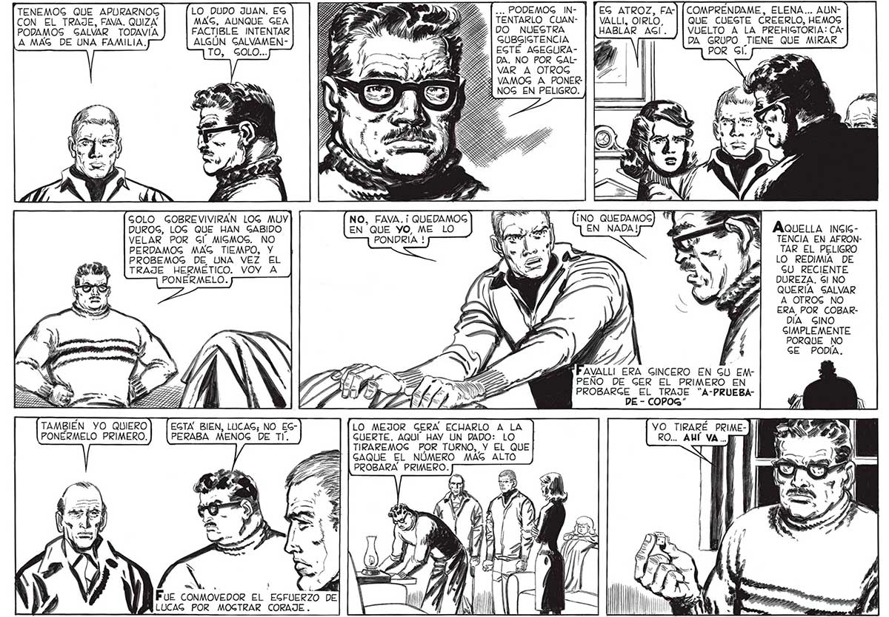

38 TENEMOS QUE APURARNOG LO DUDO JUAN. ES CON EL TRAJE, FAVA. QUIZA MAG, AUNQUE GEA PODAMOS GALVAR TODAVIA FACTIBLE INTENTAR A MAG DE UNA FAMILIA. ALGÚN GALVAMENTO, GOLO... GOLO GOBREVIVIRAN LOG MUY DUROG, LOG QUE HAN GABIDO VELAR POR Gl MIGMOS. NO PERDAMOG MAG TIEMPO, Y PROBEMOG DE UNA VEZ EL TRAJE HERMÉTICO. VOY A PONERMELO. TAMBIÉN YO QUIERO] [EGTA BIEN, LUCAG; NO EGPONÉRMELO PRIMERO.) [PERABA MENOG DE TI. L ZO DE LUCAG POR MOGTRAR CORAJE . ... PODEMOG IN- EG ATROZ, FATENTARLO CUAN- VALLI, OIRLO, DO NUESTRA HABLAR AGI. GUBGIGTENCIA : EGTE AGEGURADA. NO POR GALVAR A OTROG VAMOG A PONERNOG EN PELIGRO. NO, FAVA.¡ QUEDAMOG EN QUE YO, ME LO PONDRÍA ! "199 de AVALLI ERA GINCERO EN GU EM"EE > PEÑO DE GER EL PRIMERO EN IAN PROBARGE EL TRAJE “A-PRUEBASJ * Na Y ; > DE - CcOPOoG” COMPRENDAME, ELENA... AUNQUE CUESTE CREERLO, HEMOS VUELTO A LA PREHIGTORIA: CADA GRUPO TIENE QUE MIRAR POR Gil. AQUELLA INGIGTENCIA EN AFRONTAR EL PELIGRO LO REDIMIA DE GU RECIENTE DUREZA. Gl NO QUERÍA SALVAR A OTROS NO ERA, POR COBARDIA GINO GIMPLEMENTE PORQUE NO GE PODIA. LO MEJOR GERA ECHARLO A LA VO TIRARÉ PRIMEGUERTE. AQUÍ” HAY UN DADO: LO TIRAREMOG POR TURNO, Y EL QUE GAQUE EL NÚMERO MAS ALTO PROBARA PRIMERO.
